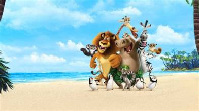

მადაგასკარი (Madagascar) — 2005 წელს სტუდიის DreamWorks Animation მიერ გამოშვებული ანიმაციური ფილმი. ფილმის პრემიერა მსოფლიო მასშტაბით შედგა 2005 წლის 27 მაისს. ფილმის სიუჟეტის მიხედვით, ცენტრალური ზოოპარკიდან გარბის ოთხი ცხოველი. მათ სურთ იცხოვრონ მშვიდად, გალიების გარეშე, მაგრამ ისინი მოულოდნელად აფრიკაში ამოჰყოფენ თავს, კერძოდ კი - მადაგასკარის კუნძულზე. ფილმს დიდი წარმატება ჰქონდა მსოფლიოს თითქმის ყველა წერტილში. DVD ფორმატში იგი გამოიცა 2005 წლის 15 ნოემბერს, ხოლოBlu-Ray დისკზე - 2009 წლის 23 სექტემბერს. შემდეგი სერია, „მადაგასკარი 2: გაქცევა აფრიკაში“ გამოვიდა 2008 წლის 7 ნოემბერს. 2012 წლისათვის დაგეგმილია მესამე ნაწილის გამოსვლაც